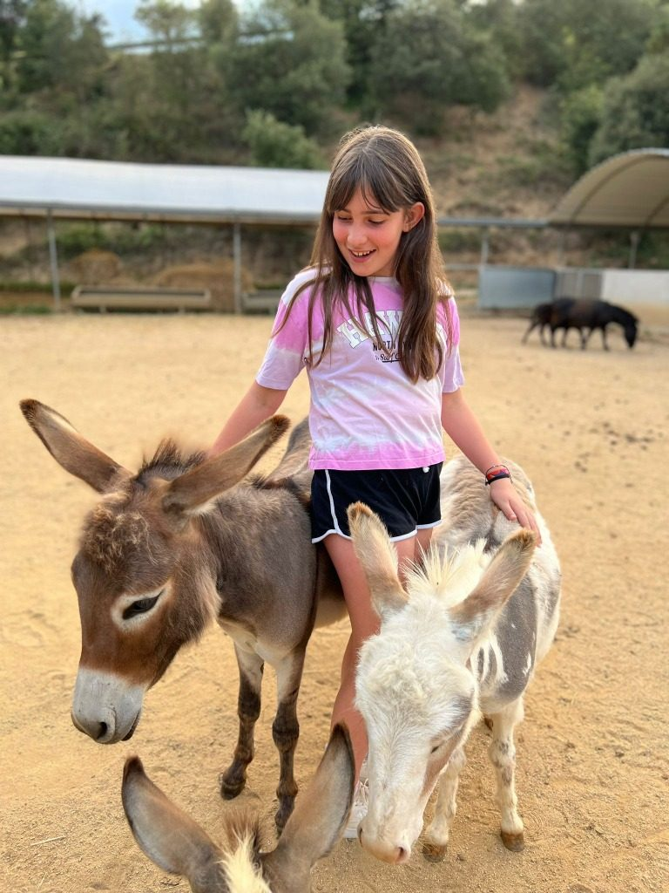
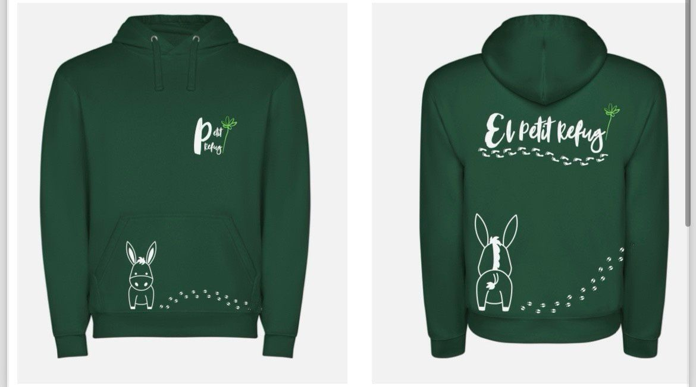
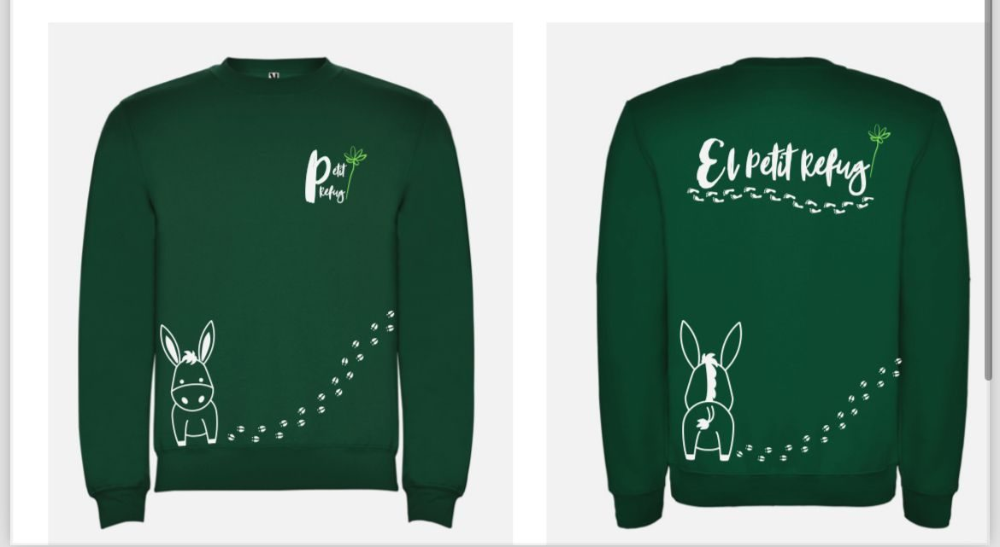
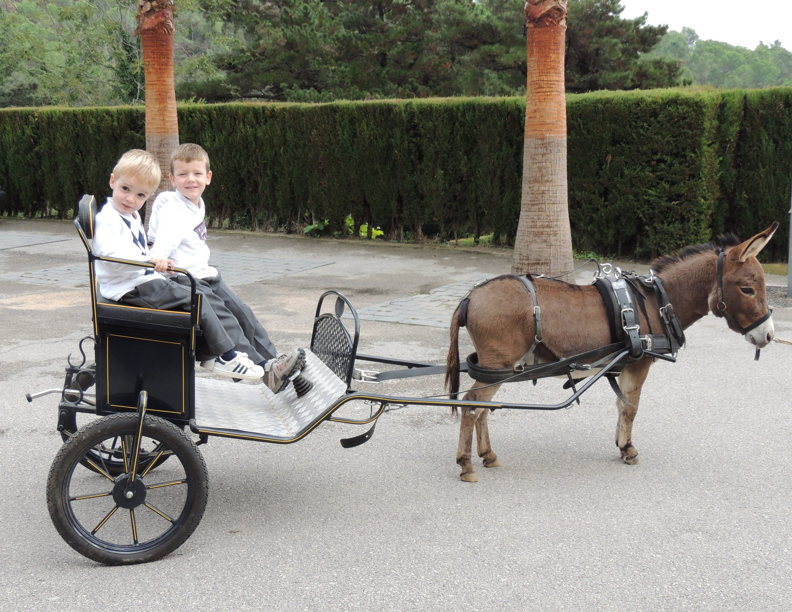
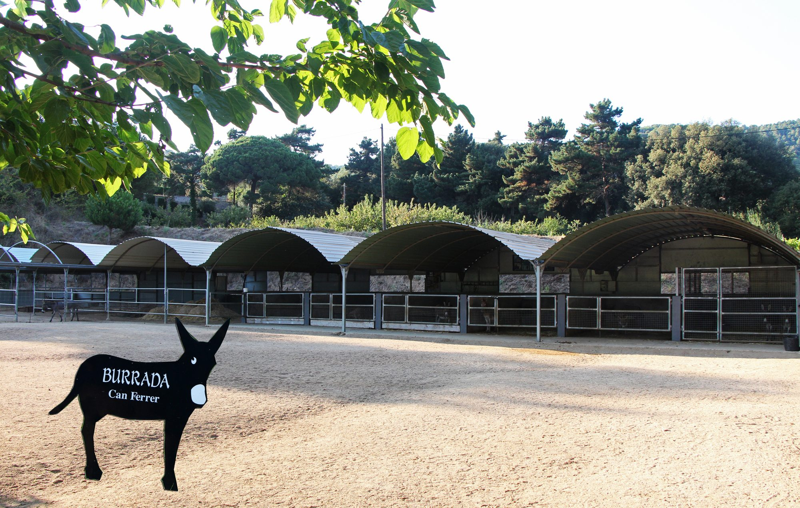

Can Ferrer · Arenys de Munt
Unforgettable Birthdays
Celebrate the most original birthday surrounded by nature. A space prepared for children and families in the heart of Can Ferrer.
Can Ferrer · Arenys de Munt
Celebrate the most original birthday surrounded by nature. A space prepared for children and families in the heart of Can Ferrer.
At Can Ferrer, birthdays turn into adventures. We offer a safe and magical environment where children can interact with our miniature donkeys, learn about life in the countryside and enjoy a day full of laughter and fresh air.
Get out of the ordinary with a themed party surrounded by noble animals and beautiful landscapes.
Facilities designed for both children and adults to enjoy the comfort and beauty of the refuge.

Gallery




Come and meet us
Carretera de Lourdes (C/ Subirans) · Arenys de Munt, Barcelona
Book now